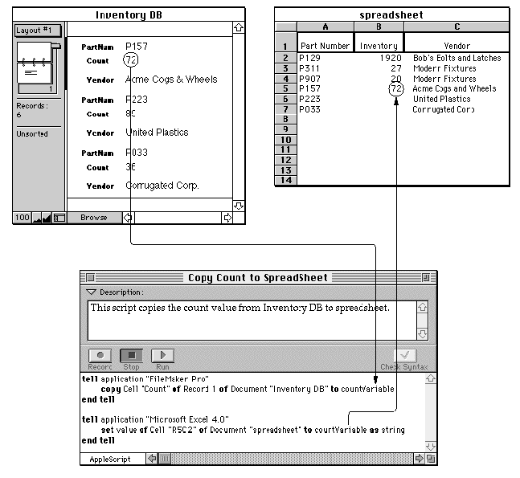

Customizing Applications
Scripts can add new features to applications. To customize an application, you add a script that is triggered by a particular action within the application, such as choosing a menu item or clicking a button. Whether you can add scripts to applications is up to each application, as are the ways you associate scripts with specific actions.Figure 1-3 A script that copies information from one application to another
